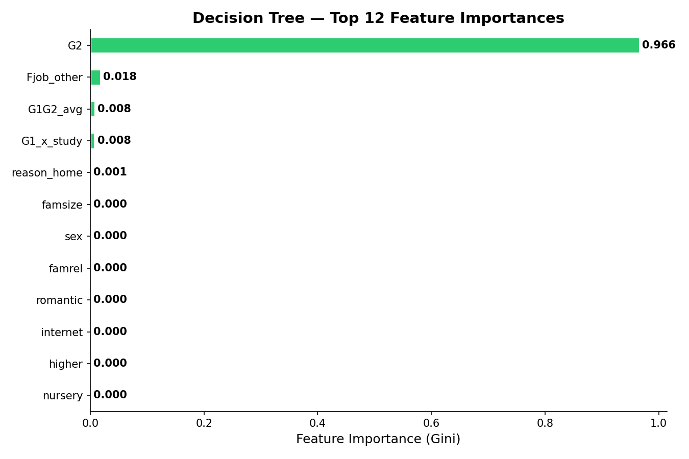
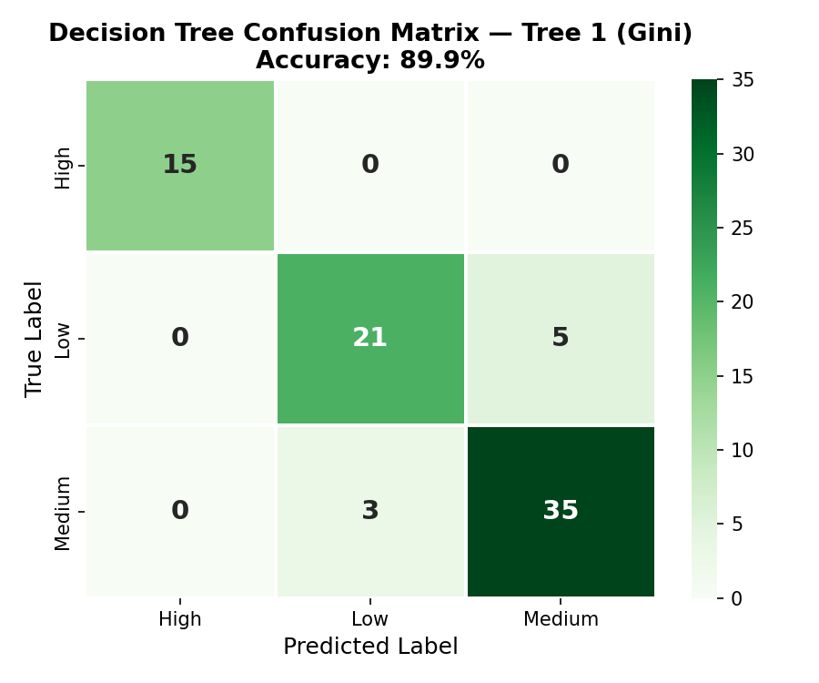
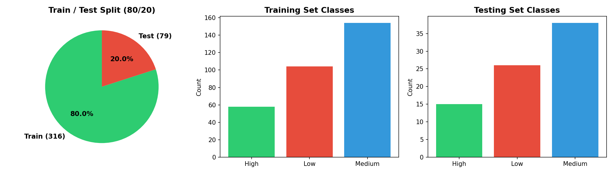
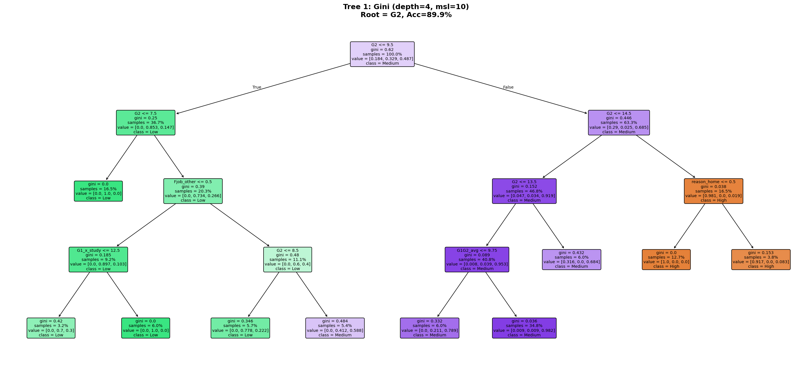
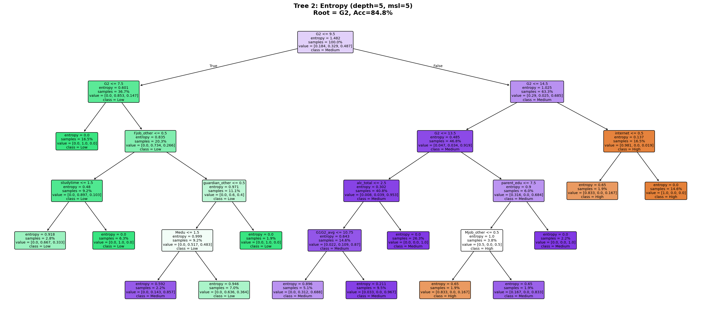
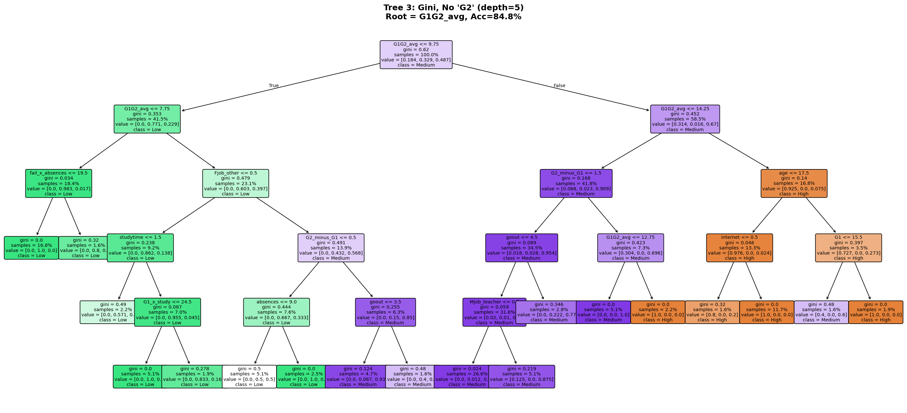
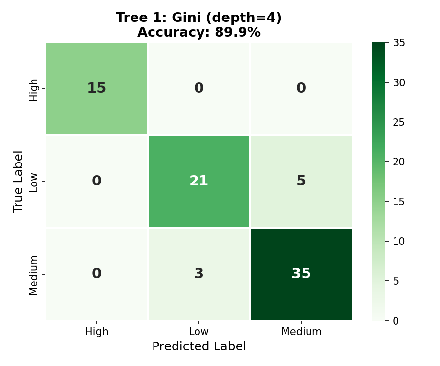
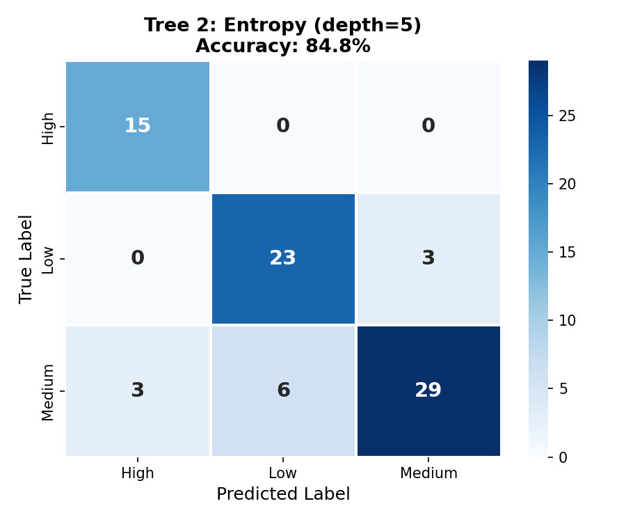
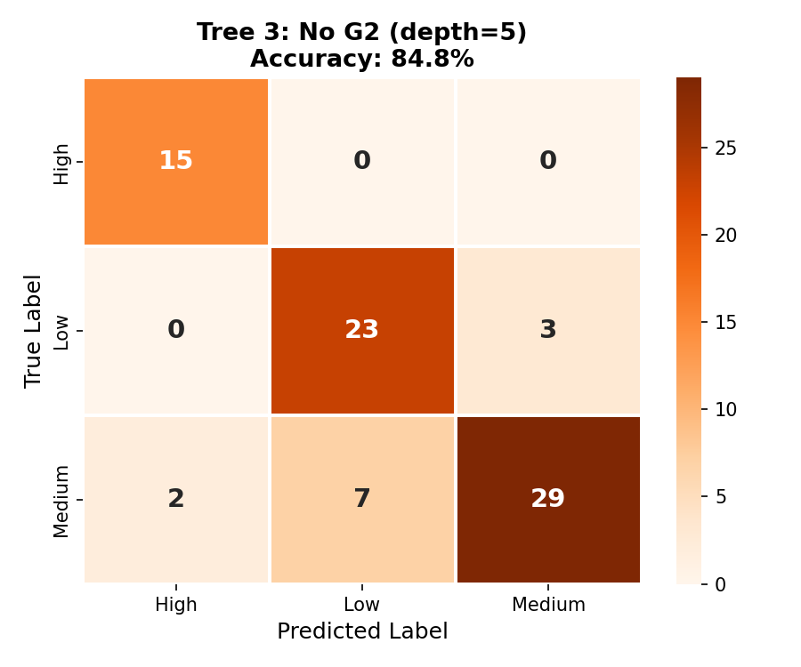

Decision Tree (DT)
A transparent, rule-based classification model — three different trees built to predict student academic performance.
Overview
A Decision Tree is a supervised machine learning model that learns a series of if-then-else rules from training data to classify or predict an outcome. Starting from a root node, the algorithm recursively splits the data on the feature that best separates the classes. Each internal node represents a decision based on a single feature value, and each leaf node represents a predicted class label. Decision trees are highly interpretable: the rules they learn can be visualized as a flowchart that anyone can follow to understand how a prediction was made. This transparency makes them especially valuable in educational contexts, where the reasoning behind a classification is just as important as the prediction itself.
Gini Impurity
Gini impurity measures how often a randomly chosen sample from a node would be misclassified if it were randomly labeled according to the distribution of classes in that node. For a node with class probabilities pâ‚, pâ‚‚, …, pâ‚–:
Gini = 1 − Σ pᵢ²
A pure node (all one class) has Gini = 0. A maximally impure node (equal class distribution) has the highest Gini. The algorithm selects the split that produces the largest decrease in Gini impurity.
Entropy & Information Gain
Entropy is an alternative impurity measure from information theory. It quantifies the "uncertainty" or "disorder" in a node:
Entropy = −Σ pᵢ · log₂(pᵢ)
Information Gain (IG) is the difference between the parent node's entropy and the weighted average entropy of the child nodes after a split. The algorithm selects the feature and threshold that maximizes Information Gain:
IG = Entropy(parent) − Σ (|child| / |parent|) × Entropy(child)
Worked Example — Gini & Information Gain:
Consider a node with 100 students: 30 Low, 50 Medium, 20 High.
Gini = 1 − (0.3² + 0.5² + 0.2²) = 1 − (0.09 + 0.25 + 0.04) = 0.62
Entropy = −(0.3·log₂0.3 + 0.5·log₂0.5 + 0.2·log₂0.2) = 1.49
After a split → Left child (20L, 10M, 0H = 30 total), Right child (10L, 40M, 20H = 70 total):
Left Entropy = −(0.67·log₂0.67 + 0.33·log₂0.33) = 0.92
Right Entropy = −(0.14·log₂0.14 + 0.57·log₂0.57 + 0.29·log₂0.29) = 1.38
IG = 1.49 − (0.3×0.92 + 0.7×1.38) = 1.49 − 1.24 = 0.25
A higher IG means the split better separates the classes.
Why Infinite Trees Are Possible
It is generally possible to create an infinite number of different trees from the same dataset because at each node, the algorithm can choose any feature and any threshold value for the split. For continuous numeric features, there are theoretically infinite possible threshold values between any two data points. Additionally, you can vary the tree depth, the minimum number of samples per leaf, the impurity criterion (Gini vs. Entropy), and which features are considered at each split. Even with the same settings, removing a single feature can change the entire tree structure — as demonstrated in our three trees below. This combinatorial explosion means the space of possible trees is effectively infinite, which is why hyperparameter tuning and pruning are essential to find trees that generalize well.


Data Preparation
The Decision Tree uses the cleaned and encoded student dataset, enhanced with G1 (first-period grade) and G2 (second-period grade) as temporally prior features — both are available before the final exam and are legitimate predictors. 7 engineered features were added: G1G2 average, grade trend (G2−G1), failures², failure×absences, parent education sum, alcohol total, and G1×studytime. The final feature set contains 48 features. The target variable is the performance label (Low / Medium / High) based on G3. Decision Trees handle both numeric and binary features natively with no need for normalisation or scaling.


Training & Testing Sets
The data was split into an 80% training set (316 students) and a 20% testing set (79 students) using train_test_split with stratified sampling (stratify=y) and a fixed random seed (random_state=42) for reproducibility. The training and testing sets are completely disjoint — no student record appears in both. This separation is essential because the model is evaluated on its ability to predict unseen data; if training data leaked into the test set, the accuracy score would be misleadingly high. Stratification ensures each class (Low, Medium, High) is proportionally represented in both splits.

Code
Implemented in Python 3. Core packages: sklearn (DecisionTreeClassifier, plot_tree, train_test_split, classification_report, confusion_matrix), pandas, matplotlib, seaborn.
Results
Three Decision Trees were constructed with different root nodes and configurations to demonstrate how tree structure changes with different settings. All trees used the same 80/20 train-test split and the enhanced 48-feature set.
Tree 1 — Gini Criterion, Depth 4, min_samples_leaf=10 (Root: G2)
The best-tuned tree using Gini impurity selected "G2" (second-period grade) as its root split — meaning the most recent academic performance is the single most discriminative feature. With tuned hyperparameters (max_depth=4, min_samples_leaf=10), this tree achieved the highest accuracy at 89.9%, a massive improvement from the 55.7% baseline.

Tree 2 — Entropy Criterion, Depth 5 (Root: G2)
Using the entropy (information gain) criterion with depth 5 and min_samples_leaf=5, the tree again selected "G2" as the root — confirming its dominance as a predictive feature regardless of the splitting criterion. This tree achieved 84.8% accuracy.

Tree 3 — Feature Subset, No "G2" (Root: G1G2_avg)
To force a different root node, we removed the "G2" feature and re-trained with Gini criterion at depth 5. The tree now selected "G1G2_avg" (the average of first and second period grades) as its root. This tree maintained strong performance at 84.8% accuracy, showing that the engineered G1G2 average effectively captures the same predictive signal as the raw G2.

Confusion Matrices — All Three Trees
The confusion matrices below show the prediction breakdown for each tree. All three trees are strong at identifying "Medium" performers (the largest class), while the best tree (Tree 1) shows excellent classification across all classes including the minority "High" class.



Feature Importance
The feature importance chart from Tree 1 reveals that "G2" dominates, followed by the engineered "G1G2_avg" and "G1", confirming that the student's academic trajectory through the year is the strongest predictor.
Key Insight: Both Gini and Entropy criteria independently selected "G2" as the most important feature. The second-period grade is the strongest predictor of final performance — much more informative than behavioral features like study time or absences. When G2 is removed, the engineered G1G2_avg feature serves as an equally strong substitute. Feature engineering + hyperparameter tuning boosted DT accuracy from 55.7% to 89.9%.
Conclusions
Decision Tree analysis of student performance reveals several important insights. First, "G2" (second-period grade) is the most important predictor, serving as the root node in both Gini and Entropy trees. This means that a student's most recent academic performance is the best indicator of their final outcome — an intuitive and actionable finding. Second, the engineered feature "G1G2_avg" is nearly as powerful, demonstrating that feature engineering can capture the same information in different forms.
The best tree achieved 89.9% accuracy on the three-class problem — a dramatic improvement from the 55.7% baseline and significantly outperforming Naïve Bayes (81.0%). Decision Trees provide unmatched interpretability: each prediction can be traced through human-readable rules. For educational stakeholders, this means the model can not only predict which students may struggle, but also explain why: "This student is predicted Low because their G2 grade is below 9 AND they have 1+ past failures." This transparency, combined with near-90% accuracy, makes Decision Trees an excellent tool for early intervention systems in schools.